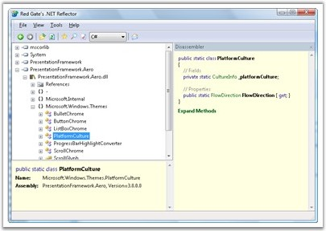
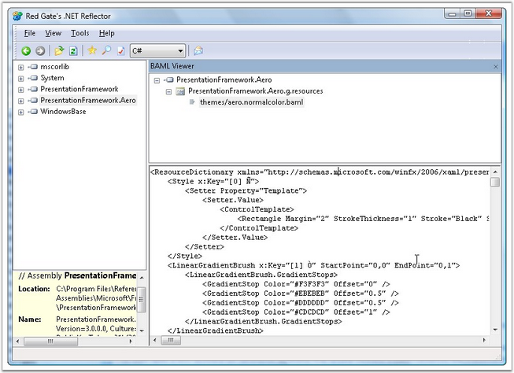

Embedded XAML Resources
Several Syncfusion WPF assemblies come with embedded XAML resources, like template definitions, style definitions, and so on. And it is often very useful to take a look at these embedded XAML to understand the structure of a control and thereby making it easier to customize its UI in your applications, if necessary.
The best way to take a look at these embedded XAML resources is to use the Reflector tool with the BAML Viewer plug-in.
Reflector + BAML Viewer
Reflector is a popular free tool available since the early days of .NET to help you take a deeper look at the source and resources comprising a .NET assembly. Reflector can be downloaded from the following location: http://www.red-gate.com/products/reflector/.
The following screen shot illustrates a thumbnail view of the Reflector tool.

Figure 52: Reflector Tool
Once you install the Reflector, download the BAML Viewer plug-in from the following location: http://www.codeplex.com/reflectoraddins/Wiki/View.aspx?title=BamlViewer.
The plug-in is a single dll called Reflector.BamlViewer.dll. Put this dll next to the Reflector.exe and add the plug-in to the Reflector.
The following steps illustrate how to add the plug-in to the Reflector.
1. In the Reflector tool, select the View/Add Ins... menu item.
2. In the Add Ins dialog box, add the above dll as an "add-in". This will include a new Tools/BAML Viewer menu item in the Reflector.
3. Then open a WPF assembly (or Syncfusion assembly) that usually contains a BAML resource, like PresentationFramework.Aero.dll (usually found under "%ProgramFiles%\Reference Assemblies\Microsoft\Framework\v3.0\PresentationFramework.Aero.dll").
4. Then select the Tools/BAML Viewer menu item. This will open a new BAML Viewer view showing the embedded XAML in the above assembly.
The following screen shot illustrates the BAML Viewer showing the embedded XAML in the PresentationFramework.Aero.dll.

Figure 53: BAML Viewer with Embedded XAML in WPF Assembly
Similarly, you can view the XAML resources embedded in the Syncfusion assemblies.